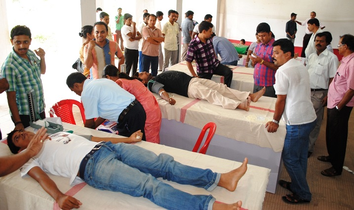

Support Us
Host A Blood DriveWhen you partner with Nebraska Community Blood Bank as a blood drive sponsor, you help save and sustain lives right here at home. You can play a critical role in ensuring that the blood our neighbors, friends, co-workers, and family members need is available.
The process is easy. The rewards are life changing.
From start to finish, a dedicated Donor Recruitment Representative will help you plan and execute your blood drive, guiding you through each step of the process. And Getting Started is easy!
Getting Started
Every step of the way, a representative of our dedicated Donor Recruitment team will work with you to plan and implement your blood drive- whether you are able to sponsor one or ten throughout the year. Your representative will be available to answer questions throughout the process, provide experienced advice on recruitment, promotion, communication, and more.
What does a blood drive host do?
- Provides the location.
- Recruits blood donors from their group or community.
- Schedules appointments for donors.
- Publicizes the event.
Your Blood Drive Recruiter will:
- Help you plan a successful blood drive.
- Assist in determining your goal.
- Provide ideas and tools to promote your blood drive.
Learn more
Contact an BDC Account Manager at XXX-XXX-XXXx or XXX-XXX-XXXX.
Coordinator Toolkit
As a volunteer blood drive coordinator, you play an important role in maintaining the community’s blood supply.
Regardless if you're experienced or new to coordinating blood drives, the Coordinator Toolkit includes
essential marketing materials and tools you need to help ensure the success of your blood drive. The materials
listed below are available for your download.
For questions or to request hard copies, please contact an Account Manager
at XXX-XXX-XXXX or XXX-XXX-XXXX.
- Blood Drive Planner
- Eligibility Guidelines
- Reasons to Donate Blood
- Blood Drive Pledge Form
- Blood Donation Journey
- Blood 101
- Recruiting Double Red Cell Donations
- Athletes and Blood Donation
- Locations Handout
- Top 10 Tips for a Successful Blood Drive
- ABO Joe Mascot Guidelines
Volunteer Roles
Forms
Useful Information:
Helpful Links
America's Blood Centers (ABC) is a national network of independent blood centers, including BDC.
This site will provide more information about blood donation and how it relates to communities.
American Association of Blood Banks (AABB) is a national accrediting association. AABB is a source for medical,
technical and policy-related information about blood donation.
The U.S. Food & Drug Administration (FDA) oversees blood banks and sets policies related to blood donation.
The Centers for Disease Control and Prevention (CDC) is the primary federal agency for protecting the health
and safety of the public. Here you can find the latest information about diseases, such as West Nile virus and HIV.
Keys to a Successful Blood Drive
The key to a successful blood drive is to be organized and get creative! Your BDC Account Manager is your best source for ideas and information to promote your event.
Here are some ideas to help:
- Assemble a blood drive committee to help recruit donors and give support on the day of the blood drive.
- Work with your Account Manager to determine appointment goals and be ready to sign up donors for appointments.
- Four to five weeks prior to the blood drive, put up posters and other promotional materials.
- Three weeks prior to the blood drive, use your newsletter, newspaper or website to promote the blood drive.
- Two weeks before the blood drive, keep everyone updated with announcements, texts or emails.
- In the days prior to the blood drive, make calls or emails to remind donors of their appointments.
- After the blood drive, be sure to say “thank you” to all participants.
- Share the success by writing an article for your newsletter, newspaper or website with pictures from the blood drive.
Additional ideas for high schools:
- Make announcements at school functions.
- Don’t forget to ask teachers, staff and parents to sign up to donate at the blood drive.
- Hold a special assembly two to five days before the blood drive. BDC can provide a speaker who has received a
- blood transfusion and is willing to share his or her story.
- Place sign-up tables in high traffic areas. When appointments are made, people are more likely to donate at the
- blood drive. Appointments also keep the blood drive moving smoothly.
- Create a challenge between different student groups in your school or other schools in your area.
Remember: The best way to ask people to donate is face to face!
Ask with confidence and enthusiasm. Studies show that the primary reason people don’t donate blood is because no one ever asked!